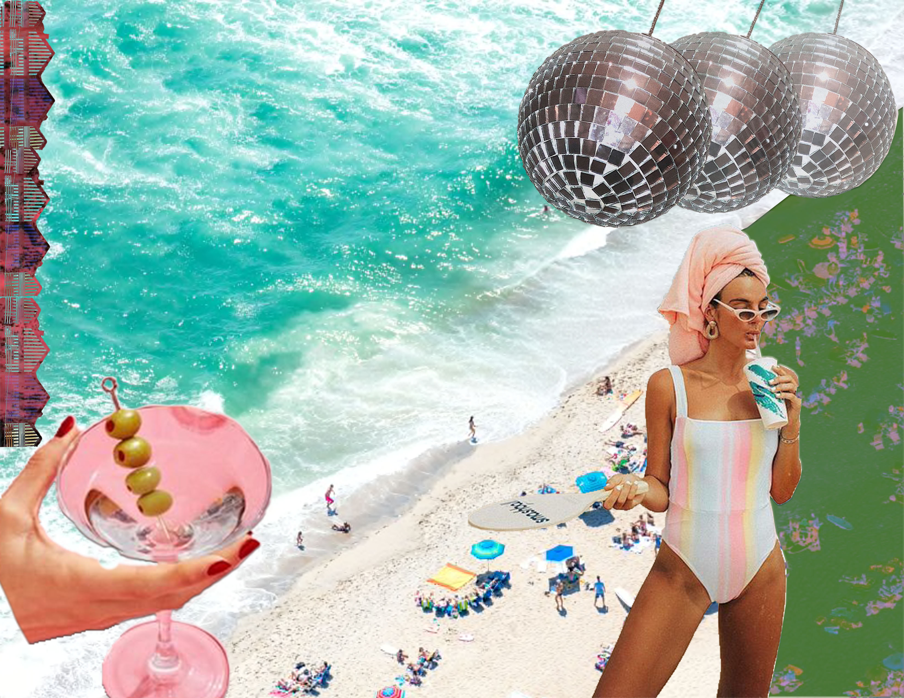

Click each title to view the project!
Digital Marketing PlanIn this project we chose a brand and continuously worked on their marketing plan. We used target words, search engine optimization, collaborations, and many more metrics/ methods to success. This was done my Junior year in MKT 355
Comp Shop and Trend ProjectThis was done my Junior year in my class called Product Development Strategies in Retailing. My group and I were tasked with revamping Kohl's women's handbags by forecasting the following season's trends. I really enjoyed this project because we got to be creative with it!
Above is another project done my junior year, one of my first times using Photoshop but it turned out to be one of my favorite projects! This was from Art 107 which actually was the class that inspired me to get a certificate in Digital Studies.
Design Thinking ProjectI really wanted to include this one - my first-ever college project from my first-ever college course! My team and I were tasked with building a wagon for preschoolers to take outside everyday when they play. The challenge was that it had to be fun, weatherproof, and kid safe. This was our intermediate presentation showing our protype plans and ideas.